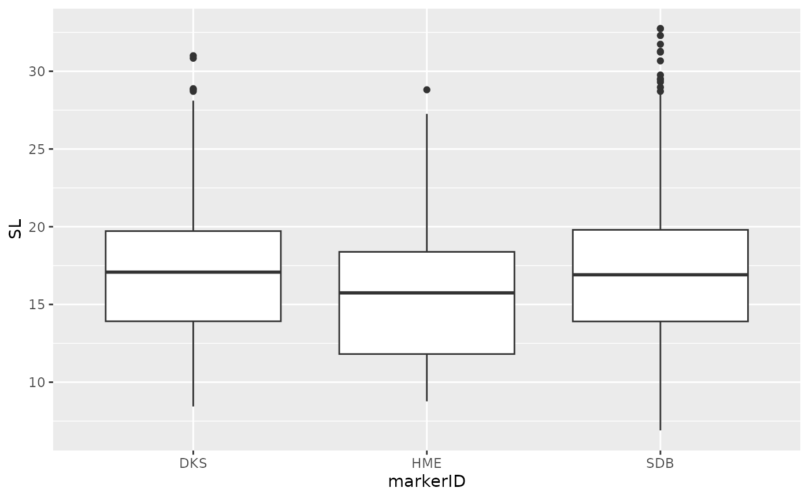
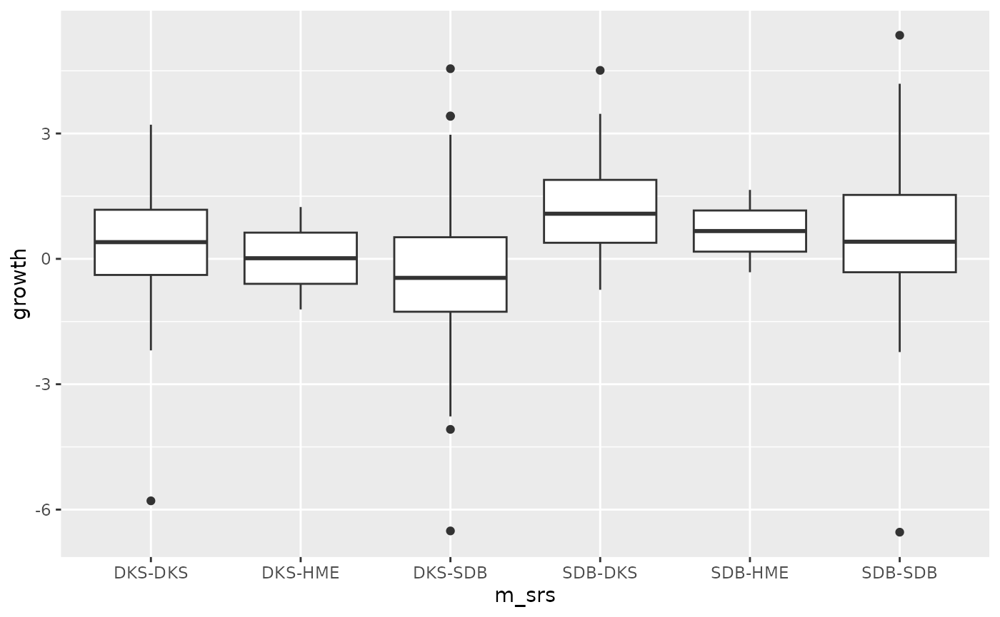

DME-011_Measurement_consistency.RmdHere we briefly test if there is an effect of the
markerID on the length measured, i.e. whether there are
consistent biases in the measures of length. This is an important check
to insure growth is measured accurately.
## ── Attaching core tidyverse packages ──────────────────────── tidyverse 2.0.0 ──
## ✔ dplyr 1.1.4 ✔ readr 2.1.5
## ✔ forcats 1.0.0 ✔ stringr 1.5.1
## ✔ ggplot2 3.5.1 ✔ tibble 3.2.1
## ✔ lubridate 1.9.3 ✔ tidyr 1.3.1
## ✔ purrr 1.0.2
## ── Conflicts ────────────────────────────────────────── tidyverse_conflicts() ──
## ✖ dplyr::filter() masks stats::filter()
## ✖ dplyr::lag() masks stats::lag()
## ℹ Use the conflicted package (<http://conflicted.r-lib.org/>) to force all conflicts to become errors##
## Attaching package: 'magrittr'
##
## The following object is masked from 'package:purrr':
##
## set_names
##
## The following object is masked from 'package:tidyr':
##
## extract
# this vignette requires the package guppyDme to be installed. If the user wishes not to install the package, please comment out the "library(guppyDme)" line and run instead the lines commented out below
#### If you have the guppyDme package installed
# loading package
library(guppyDme)
# # If you do NOT wish to install the guppyDme package, please uncomment and run the following two lines of code, adding the package functions to the Global Environment and loading the data
# source(file.path(here::here(), "R", "package_functions.R"))
# load(file.path(here::here(), "data", "DMEdata.rda"))
data <- DMEdata
cr_data <- readRDS(file.path(here::here(), "vignettes", "DME_cr_data.rds"))Let’s see how many marking events there are, sorted by capture/recapture, and check if any difference in the average length measured is visible, and if it’s significant.
table(data$markerID, data$recap)##
## 0 1
## DKS 549 276
## HME 82 63
## SDB 961 999
data %<>%
mutate(SL = as.numeric(SL))## Warning: There was 1 warning in `mutate()`.
## ℹ In argument: `SL = as.numeric(SL)`.
## Caused by warning:
## ! NAs introduced by coercion
ggplot(data, aes(x = markerID, y = SL)) +
geom_boxplot()## Warning: Removed 742 rows containing non-finite outside the scale range
## (`stat_boxplot()`).
m <- lme4::lmer(SL ~ markerID + as.factor(recap) +
(1|markID) + (1|streamID),
data = data)
summary(m)## Linear mixed model fit by REML ['lmerMod']
## Formula: SL ~ markerID + as.factor(recap) + (1 | markID) + (1 | streamID)
## Data: data
##
## REML criterion at convergence: 12071.4
##
## Scaled residuals:
## Min 1Q Median 3Q Max
## -3.6153 -0.3796 -0.0034 0.2896 5.9753
##
## Random effects:
## Groups Name Variance Std.Dev.
## markID (Intercept) 16.8338 4.1029
## streamID (Intercept) 0.3267 0.5716
## Residual 4.2708 2.0666
## Number of obs: 2188, groups: markID, 1479; streamID, 4
##
## Fixed effects:
## Estimate Std. Error t value
## (Intercept) 17.2441 0.3315 52.022
## markerIDHME -1.2315 0.5084 -2.423
## markerIDSDB -0.2821 0.1546 -1.825
## as.factor(recap)1 0.1244 0.1224 1.017
##
## Correlation of Fixed Effects:
## (Intr) mIDHME mIDSDB
## markerIDHME -0.165
## markerIDSDB -0.271 0.175
## as.fctr(r)1 -0.095 -0.086 -0.210
car::Anova(m, type = "III")## Analysis of Deviance Table (Type III Wald chisquare tests)
##
## Response: SL
## Chisq Df Pr(>Chisq)
## (Intercept) 2706.2687 1 < 2e-16 ***
## markerID 7.8924 2 0.01933 *
## as.factor(recap) 1.0341 1 0.30920
## ---
## Signif. codes: 0 '***' 0.001 '**' 0.01 '*' 0.05 '.' 0.1 ' ' 1To check if biases could affect the growth measure, we will observe the average difference in length, before and after, for individuals measured twice by either the same or different observers.
cr_data %<>%
mutate(m_srs = str_c(marker_0, marker_1, sep = "-")) %>%
filter(!is.na(m_srs))
unique(cr_data$m_srs)## [1] "DKS-DKS" "DKS-SDB" "DKS-HME" "SDB-SDB" "SDB-DKS" "SDB-HME"
ggplot(cr_data, aes(x = m_srs, y = growth)) +
geom_boxplot()
There is definitely an effect of the series of markers, so it will have to be accounted for in the analyses.